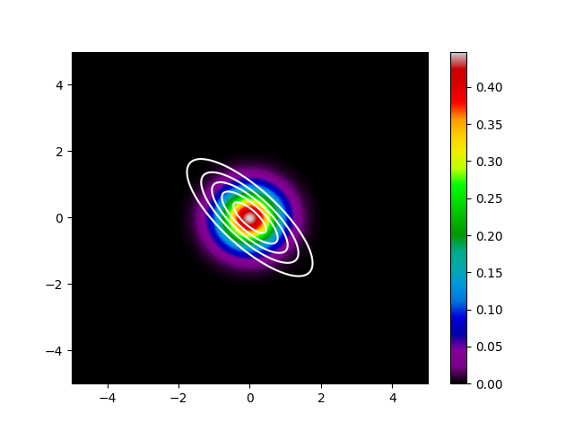

本記事はQrunchからの転載です。
みんながよく使うKL(Kullback–Leibler) divergenceの話題です。 KL divergenceといえば2つの確率分布の違いを計算できるやつですね。 KL divergenceは対称性というものがなく、与えられた2つの分布を入れ替えるとKL divergenceの値が変わります。 今回は、この入れ替えたときの影響を最小化問題を例としてまじめに考えます。
KL divergence
KL divergenceは2つの確率分布がどれだけ異なるかを数値としてあらわすものです。 具体的には次のように定義されます。 $$ KL(p||q) = \int p(\mathbf{x}) \log \left(\frac{p(\mathbf{x})}{q(\mathbf{x})}\right) {\rm d\mathbf{x}}. $$ $p$と$q$はそれぞれ確率分布であり、$KL(p||q)$が大きいほど、2つの分布はより異なることをあらわします。また$KL(p||q)=0$のとき、$p$と$q$は等しい分布です。 なお、$KL(p||q) \geq 0$が成り立つことに注意してください。
KL divergenceの最小化問題
KL(p||q)のケース
仮に分布$p$が固定されているものだとして、$KL(p||q)$が最小化されるように$q$を決めることを考えます。ただし、$p=q$になることはないとします。
前述したKL divergenceの定義をみてみると、$p(\mathbf{x})$が0でない値をもつ領域では$q(\mathbf{x})$も$p(\mathbf{x})$に近い値かあるいは$p(\mathbf{x})$より大きい値にならなければ、$KL(p||q)$が大きくなってしまいます。よってこの場合にはKL divergenceを最小化するような$q$は$p$全体をカバーするように広がる分布になると考えられます。
KL(q||p)のケース
次にKL divergenceに与える$p$と$q$の順序をひっくり返し、$KL(q||p)$の最小化問題を考えてみます。$KL(q||p)$は $$ KL(q||p) = \int q(\mathbf{x}) \log \left(\frac{q(\mathbf{x})}{p(\mathbf{x})}\right) {\rm d\mathbf{x}}$$ ですね。 $KL(q||p)$が小さくなるにはどうすればよいかといえば、$p(\mathbf{x})$が0に近いような領域で$q(\mathbf{x})$が小さくなるようにすればよいです。$p(\mathbf{x})$が小さい領域はいくらでもあり、そういったところに大きい$q(\mathbf{x})$が割り当てられると、$KL(p||q)$が大きくなってしまいますね。このため、イメージとしては、$KL(p||q)$を最小化するような$q$は$p$の値が大きいところに集中するような分布になると考えられます。
実験
上記の話が成り立つのかを実験してみます。
実験準備
$p(\mathbf{x})$は次のようにします。
$$p(\mathbf{x}|\mathbf{u},\Sigma)=\frac{1}{{2\pi}|\Sigma|^{1/2}}\exp\biggl[-\frac{(\mathbf{x}-\mathbf{u})^{\top}\Sigma^{-1}(\mathbf{x}-\mathbf{u})}{2}\biggr].$$ また$\mathbf{u}$と$\Sigma$はそれぞれ $$\mathbf{u} = \begin{pmatrix} 0.3 \\ -0.2 \end{pmatrix}, \Sigma =\begin{pmatrix} 0.9&-0.7 \\ -0.7 & 0.9 \end{pmatrix}$$ とました。 $p$を確率密度毎に色わけして表示してみると、以下のとおりです。
また$q(\mathbf{x})$は次のようにします。 $$q(\mathbf{x}|\mathbf{s},\alpha)=\frac{1}{{2\pi}\alpha}\exp\biggl[-\frac{(\mathbf{x}-\mathbf{s})^{\top}(\mathbf{x}-\mathbf{s})}{2\alpha}\biggr].$$
$q$のうち、$\mathbf{s}$と$\alpha$が最適化するべきパラメータです。 $q$は同心円状に確率密度をもつ分布になりますので、パラメータをどうやっても$p$と一致することはできません。
実験結果
$KL(p||q)$を最小化したケースをまず示します。

白い線が$p$の等高線です。色分けされて表示されているのが、$q$の確率密度になります。 先程の話のとおり、$q$は$p$に対して広がった分布になっていることがわかります。
次に$KL(q||p)$を最小化したケースです。

こちらも先程の話のとおり、$q$は$p$の値が大きい箇所に集中した分布になっています。
まとめ
今回は$q$を$p$に近づける話に限定しましたが、KL divergenceに与える分布を入れ替えると結果が変わるケースが多そうだなと想像できたんじゃないかと思います。 頭の片隅に留めておくと役立つかもしれません。
実験に使ったスクリプト
#! /usr/bin/env python
import argparse
import os
import logging
import matplotlib.pyplot as plt
import numpy as np
from scipy.stats import multivariate_normal
import torch
from torch.distributions import MultivariateNormal
import torch.optim as optim
def parse_argument():
parser = argparse.ArgumentParser("", add_help=True)
parser.add_argument("-o", "--output_dir", type=str)
args = parser.parse_args()
return args
def make_data(border=5):
xy = np.mgrid[-border:border:0.005, -border:border:0.005]
grids = xy.shape[1]
x = xy[0]
y = xy[1]
xy = xy.reshape(2, -1).T
p_pdf = multivariate_normal.pdf(xy, np.array([0, 0]),
np.array([[.9, -.7], [-.7, .9]]))
return xy, x, y, p_pdf, grids
def kl_div(p, q):
finite_index = ~((q == 0.) | (torch.isinf(p)))
q = q[finite_index]
logq = torch.log(q)
return torch.sum(q * (logq - p[finite_index]))
def optimize_q(xy, p_pdf, invert=False):
p_pdf = torch.tensor(p_pdf, requires_grad=False, dtype=torch.float32)
mean = torch.tensor([0.3, -0.2], requires_grad=True)
cov_coeff = torch.tensor(1., requires_grad=True)
xy = torch.tensor(xy, requires_grad=False, dtype=torch.float32)
optimizer = optim.SGD([mean, cov_coeff], lr=.000005)
if not invert:
p_pdf = torch.log(p_pdf)
for i in range(25):
optimizer.zero_grad()
cov = torch.eye(2, 2) * cov_coeff
norm_torch = MultivariateNormal(mean, cov)
q_pdf = norm_torch.log_prob(xy)
if invert:
loss = kl_div(q_pdf, p_pdf)
else:
q_pdf = torch.exp(q_pdf)
loss = kl_div(p_pdf, q_pdf)
loss.backward()
optimizer.step()
logging.info(
f"[{i + 1}iter] loss:{loss}, mean:{mean}, cov_alpha:{cov_coeff}")
return mean.detach().numpy(), cov_coeff.detach().numpy()
def plot_dist(x, y, p_pdf, border, output_path, contour=None):
plt.pcolormesh(x, y, p_pdf, cmap="nipy_spectral")
plt.colorbar()
if contour is not None:
plt.contour(x, y, contour, colors="white", levels=5)
plt.savefig(output_path)
plt.close()
if __name__ == "__main__":
logger = logging.basicConfig(level=logging.INFO)
args = parse_argument()
output_dir = args.output_dir
border = 5
xy, x, y, p_pdf, grids = make_data(border)
data_dist_path = os.path.join(output_dir, "data_dist.png")
plot_dist(x, y, p_pdf.reshape(grids, grids), border, data_dist_path)
for invert in [True, False]:
mean, cov_coeff = optimize_q(xy, p_pdf, invert=invert)
output_path = os.path.join(
output_dir, f"gauss_m{mean}_c{cov_coeff}.png")
q_pdf = multivariate_normal.pdf(xy, mean, np.eye(2, 2) * cov_coeff)
plot_dist(x, y, q_pdf.reshape(grids, grids), border,
output_path, contour=p_pdf.reshape(grids, grids))
logging.info(f"{output_path} is saved.")